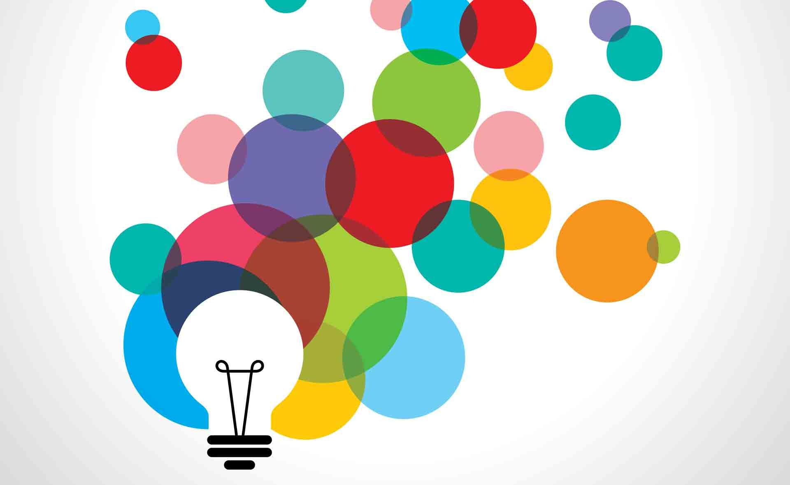

We have shown that
it’s possible to recognise disordered speech provided that you can adapt the recogniser to the speaker. Adaptation needs training data, but typically only a few minutes of speech it’s best to close the ‘virtuous circle’ where data collected from a device in use is used to improve the performance of the device.

CloudCAST
Aims to translate this research into a resource for speech professionals. Using speech Recognition running remotely, implemented in the Kaldi toolkit, Interfaces for non-specialists, Ability to build your own application, Tools based on ASR:Pronunication quality feedback, Intelligibility measures Speech Databases.
